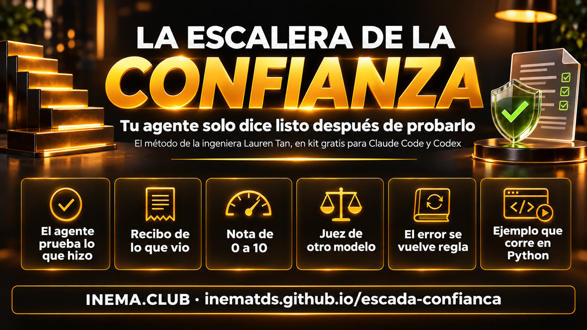

Le pides algo a la IA, te dice listo y pierdes la tarde revisando. Una ingeniera de SpaceX despertó con 20 entregas listas de sus agentes. Con la escalera de la confianza, tu agente solo dice listo después de probarlo.
Cuando la IA dice “listo” sin haber probado, quien revisa eres tú, y eso se come la tarde. La escalera de la confianza es un método de tres peldaños para que tu agente de programación (Claude Code o Codex) solo entregue con prueba: usa lo que hizo como un usuario y muestra un recibo, pasa una evaluación con nota 10 de 10 y convierte cada error repetido en una regla que la computadora exige sola. Es para quien ya usa agentes de IA en el código y quiere revisar menos. El kit trae textos listos para pegar en tu proyecto y un ejemplo que corre solo con Python.

Vídeo
Vídeo en portugués.
El agente escribe el código, le echa un vistazo y responde “hecho”. Nadie abrió la pantalla, nadie probó el caso raro. La revisión te queda a ti.
“Arreglé el registro” llega sin la pantalla abierta, sin la prueba corrida, sin lo que vio. No tienes forma de saber si es verdad sin rehacer el camino.
Cada entrega vuelve a tu escritorio: abrir la app, probar, encontrar el error, explicar otra vez. El tiempo que la IA ahorró se pierde en la revisión.
Hoy escribes “valida el correo”, y la semana que viene lo escribes otra vez. Con un agente, eso cansa. Con diez corriendo al mismo tiempo, no se puede.
Cada peldaño te quita una parte de la revisión de las manos. Subes uno a la vez; el primero ya cambia tu día.
Antes de decir “listo”, usa lo que cambió como un usuario: abre la pantalla, repite el error antes de arreglarlo, revisa después y entrega un recibo con lo que hizo y lo que vio. Un mapa de las pantallas de la app le muestra dónde está cada función.
Una evaluación (una lista de 8 a 15 casos con la respuesta correcta) da una nota de 0 a 10. Cuando la respuesta es texto, quien pone la nota es un juez: otro agente, de otro modelo, para que el agente no se dé la razón a sí mismo. El agente corrige y vuelve a correr hasta 10 de 10.
Un error que apareció dos veces ya no se vuelve otro pedido: se vuelve una regla que la máquina exige, como una prueba automática o un verificador de código. Una instrucción el agente la puede olvidar; una prueba no se la puede saltar.
El agente entregó un registro de usuarios y dijo “listo”. Aceptaba correos sin arroba y el mismo correo dos veces. El kit trae este caso armado y le pasa la escalera.
En la prueba, aceptó un correo inválido y uno repetido. En la evaluación, falló 7 de los 10 casos. En la regla, no llamaba a la validación de correo. Resultado: “no está listo”.
Rechaza el correo inválido, la contraseña corta y el registro repetido; acierta los 10 casos; la regla confirma que la validación está ahí. Resultado: “listo con prueba”.
Lauren Tan (@poteto) es ingeniera de software en SpaceXAI, en el equipo de Grok Bot, y antes trabajó en Cursor. Ella llama a la idea “trust ladder”, escalera de confianza: cuanto más prueba el agente, más trabajo le puedes dejar.
Los números son de ella, dichos en el workshop: mil PRs en un mes (un PR es un paquete de cambios de código listo para entrar al proyecto), casi 800 en los primeros 12 días del mes siguiente y cerca de 20 PRs ya en main en una mañana, entregados por los agentes mientras ella dormía.
El nombre “escalera de la confianza”, el ejemplo del registro, las plantillas y la nota del juez son de INEMA, adaptados en portugués para Claude Code y Codex.
No necesitas armar todo de una vez. Cada paso de abajo ya vale por sí solo.
Dile al agente que solo puede escribir “listo” con el recibo al lado: qué corrió, qué vio y qué no probó. El kit trae el texto listo para pegar.
Toma una tarea que se repite y anota 10 ejemplos con la respuesta correcta, incluidos los que ya salieron mal. Esa es tu evaluación.
Cuando vayas a escribir el mismo comentario por segunda vez, pídele al agente una prueba que impida que ese error vuelva.
¿Quieres instalarlo en tu proyecto? Mira cómo usarlo ↓
De aquí para abajo es la parte técnica: los archivos del kit, los comandos y el ejemplo corriendo. No necesitas esta parte para entender lo de arriba.
Textos en Markdown (en portugués) para que tu agente los lea, un registro en CSV y un ejemplo en Python. Nada que instalar aparte de Python, y solo si quieres correr el ejemplo.
kit/degrau1-prova/SKILL.md: la skill “probar antes de decir listo”, con la plantilla de RECIBO. mapa-de-telas.md: tabla de dónde está cada función de la app y cómo saber que funcionó.
kit/degrau2-nota/avaliacao.md: cómo armar la evaluación en 4 pasos y el pedido de repetir hasta 10/10. juiz.md: el prompt del juez con la rúbrica de 10 puntos y respuesta en JSON.
kit/degrau3-regra/erros-viram-regra.md: la escalera de reglas (desde el error que ni siquiera puede existir hasta el comentario de revisión) y la rutina de 5 minutos. registro-de-erros.csv: donde anotar cada error.
kit/AGENTS-escada.md: los tres peldaños en un bloque para el CLAUDE.md (Claude Code) o el AGENTS.md (Codex) de tu proyecto.
exemplo/escada.py pasa los tres peldaños en dos registros: cadastro_quebrado.py (lo que entregó el agente) y cadastro_corrigido.py (después de la escalera).
tests/test_escada.py: 3 pruebas que confirman que el roto reprueba, que el corregido pasa con 10/10 y que los archivos del kit están todos ahí.
El bloque en el CLAUDE.md/AGENTS.md hace que el agente pase por estas etapas antes de responder. En el peldaño 3 entran el lint (verificador automático de código) y las pruebas de tu proyecto. El ejemplo en Python hace lo mismo de forma automática y sale con código 0 solo si pasan los tres peldaños.
Para leer y pegar el kit, solo el repositorio. Para correr el ejemplo, Python 3.9 o más nuevo, sin ninguna biblioteca extra.
Solo la biblioteca estándar. Revisa la versión:
python3 --versionPara descargar el kit (o descarga el ZIP desde GitHub).
git --versionEl agente que va a leer el bloque y la skill en tu proyecto. Cualquiera de los dos sirve.
Los pasos 1 a 3 muestran la escalera funcionando en el ejemplo. Los pasos 4 a 7 llevan el kit a tu proyecto. Cambia ../seu-projeto por la ruta de tu carpeta.
Clona el repositorio y entra a la carpeta.
git clone https://github.com/inematds/escada-confianca.git cd escada-confianca
El script muestra el recibo, la nota y la regla de cada peldaño, y sale con código 1.
python3 exemplo/escada.py cadastro_quebrado # ... "nota": 3 ... # NÃO está pronto — 0/3 degraus
El corregido pasa los tres peldaños y sale con código 0.
python3 exemplo/escada.py cadastro_corrigido # PRONTO com prova — 3/3 degraus python3 -m unittest discover -s tests -v # Ran 3 tests ... OK
Agrega la parte “Antes de dizer pronto” (“Antes de decir listo”) al CLAUDE.md (Claude Code) o al AGENTS.md (Codex). Córrelo una sola vez (si lo corres de nuevo, el bloque se duplica) y revisa con grep. Después abre el archivo y cambia los comandos entre < > por los de tu proyecto; por ejemplo, <lint> && <testes> se vuelve ruff check . && pytest en un proyecto Python.
# Claude Code sed -n '/^## Antes de dizer/,$p' kit/AGENTS-escada.md >> ../seu-projeto/CLAUDE.md # Codex sed -n '/^## Antes de dizer/,$p' kit/AGENTS-escada.md >> ../seu-projeto/AGENTS.md # revisar (debe aparecer una sola línea) grep -n "Antes de dizer" ../seu-projeto/CLAUDE.md # ou ../seu-projeto/AGENTS.md
El bloque espera los dos archivos en docs/. Después pídele al agente que complete el mapa con el texto que está en el propio mapa-de-telas.md. En Claude Code, la skill del peldaño 1 también puede entrar como skill del proyecto.
mkdir -p ../seu-projeto/docs cp kit/degrau1-prova/mapa-de-telas.md kit/degrau3-regra/registro-de-erros.csv ../seu-projeto/docs/ # opcional, Claude Code: skill "provar-antes-de-pronto" mkdir -p ../seu-projeto/.claude/skills/provar-antes-de-pronto cp kit/degrau1-prova/SKILL.md ../seu-projeto/.claude/skills/provar-antes-de-pronto/
Sigue kit/degrau2-nota/avaliacao.md: elige una tarea, escribe de 8 a 15 casos (la lista CASOS en exemplo/escada.py es un modelo) y pídele al agente las vueltas hasta 10/10. Para respuestas en texto, corre kit/degrau2-nota/juiz.md en un modelo distinto del que hizo el trabajo.
# el pedido del loop, en kit/degrau2-nota/avaliacao.md (en el kit está en portugués): "Corre <comando de la evaluación>. Mientras la nota sea menor que 10, lee los casos que fallaron, corrige la causa (no el caso) y vuelve a correrlo. Detente en 10/10 o después de 5 vueltas, y muéstrame la nota de cada vuelta."
“Lint” es el verificador automático de código; “CI” son las pruebas que corren solas en cada envío a GitHub. Anota el error en docs/registro-de-erros.csv y usa el pedido de kit/degrau3-regra/erros-viram-regra.md. En el ejemplo, la regla es la función degrau3_regra, que lee el código y reprueba el cadastrar que no llama a validar_email.
# el pedido, en kit/degrau3-regra/erros-viram-regra.md (en el kit está en portugués): "Este error ya apareció: <error>. No corrijas solo este caso. Propón la regla más alta posible (tipo, lint, prueba o CI) que impida que el error vuelva, escribe la regla con una prueba que falle en el código viejo y pase en el nuevo, y córrelo todo."
Fragmentos de la salida de exemplo/escada.py, resumidos: el programa imprime el JSON completo, con sangría en varias líneas; aquí quedan solo los campos principales y la última línea, que sale igual. El programa imprime en portugués.
{"degrau": 2, "passou": false, "nota": 3, "erros": ["e-mail sem arroba", "e-mail vazio", "senha curta", "e-mail repetido", "maiúscula repetida", "domínio sem ponto", "espaço no e-mail"]} {"degrau": 3, "passou": false, "regra": "cadastrar() precisa chamar validar_email() — REPROVADO"} NÃO está pronto — 0/3 degraus
{"acao": "cadastrar o mesmo e-mail de novo", "viu": {"ok": false, "erro": "e-mail já cadastrado"}} {"degrau": 2, "passou": true, "nota": 10, "erros": []} {"degrau": 3, "passou": true, "regra": "cadastrar() precisa chamar validar_email()"} PRONTO com prova — 3/3 degraus